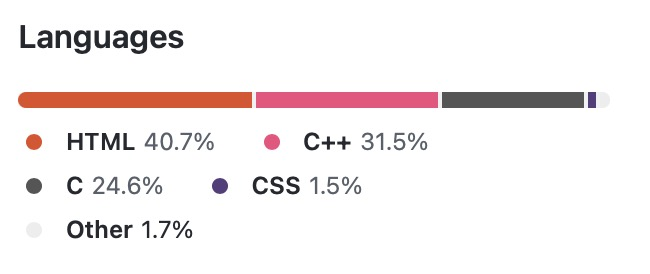
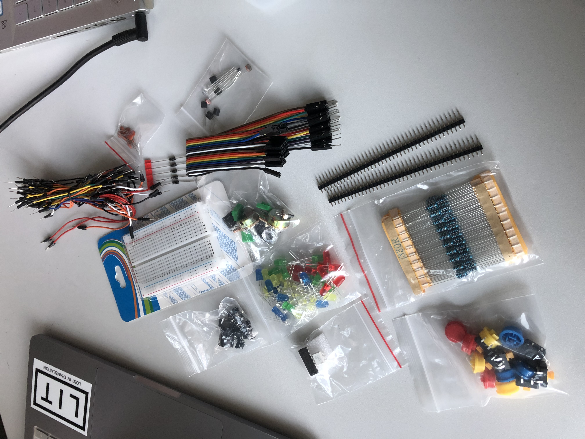
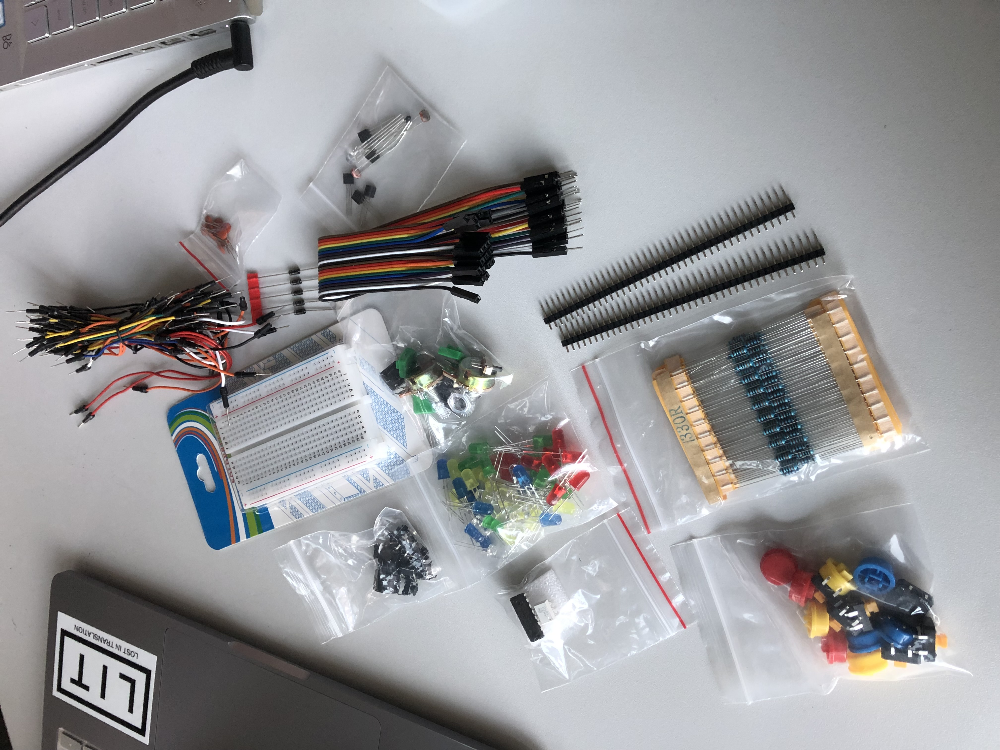

Virtual Coffee Kitchen
This Project was a university collaboration between HTW Berlin and UTS Australia.
Introducing Virtual Coffee Kitchen, a digital twin designed for the modern-day remote worker. With the push of a button, you can now join a Zoom meeting and feel like you're right back in the office with your colleagues. This innovative project uses the power of an ESP32 board to bring remote workers together in a virtual coffee break setting, allowing them to stay connected, collaborate and build camaraderie even while working from home. Say goodbye to lonely home-office days and hello to a more connected and productive work environment with Virtual Coffee Kitchen.
Problem: Staying in contact with Co-workers in homeoffice
Solution: Wherevever you are - contact your co-workers with one click and start chatting!
The Virtual Coffee Kitchen is designed for remote workers who are looking to stay connected with their colleagues and maintain a sense of community while working from home. Whether it's for a quick catch-up or a scheduled meeting, this digital solution provides an easy and convenient way for remote workers to stay connected and productive.
The goal was to create a digital solution for remote workers to connect and collaborate in a virtual coffee break setting without relying on reading a message in a chat tool.
With Status quo, the thoughtworkers can now join a zoom meeting with an external device placed next to their usual work station. The device is portable and runs on battery.
The wifi can be reconfigured at any time - depending if you want to work in the office or from home
Once a person joins the meeting, other thoughtworkers will be notified with a non-disturbing screen flash of the device.

About the team
Who are we?
Our team consinst of 5 students - we were using the agile management framwork SCRUM to work together on this project. We were working in a distributed team - 3 students from HTW Berlin and 2 students from UTS Sydney.
HTW:
UTS:
Our Technologies used
What we learned


 

Result
The Virtual Coffee Kitchen project has been a challenging and rewarding experience for the development team.
The success of the project has been a source of pride for the development team and has confirmed their belief in the power of technology to bring people together and make a real impact.
The development process was a collaborative effort that involved close collaboration with the client, Thoughtworks, to ensure that the product met the needs of remote workers.
The team is proud to have created a product that is not only innovative but also truly makes a difference in the lives of remote workers.
The Virtual Coffee Kitchen project has been a fantastic opportunity for the development team to showcase their skills and to contribute to a product that has the potential to change the remote work landscape.
The Virtual Coffee Kitchen project made effective use of a combination of cutting-edge technologies to create a digital solution for remote workers. The Heltec ESP32 Wifi Kit served as the backbone of the system, providing the necessary connectivity and computational power to run the digital twin.
The Apache server was used to host the user interface and provide access to the Zoom meeting functionality.
The Arduino IDE was used to program the ESP32 board, making it easy to develop and test the product. The lithium battery ensured that the Virtual Coffee Kitchen could be used even in areas without access to a power source, making it a truly portable solution for remote workers.
The 3D printed case provided a protective and aesthetically pleasing enclosure for the technology, giving the product a professional and finished appearance.
The successful implementation of these technologies in the Virtual Coffee Kitchen project has resulted in a product that is both innovative and practical.
The combination of the Heltec ESP32 Wifi Kit, Apache server, Arduino IDE, lithium battery, and 3D printed case has created a product that is both powerful and easy to use, while also being visually appealing.